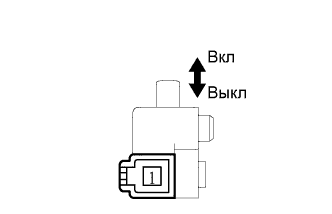

СИСТЕМА ЗАДНИХ СИДЕНИЙ С ЭЛЕКТРОПРИВОДОМ > Цепь выключателя стояночного тормоза |
| 1.ПРОВЕРЬТЕ КОНТРОЛЬНУЮ ЛАМПУ СОСТОЯНИЯ ТОРМОЗНОЙ СИСТЕМЫ |
Убедитесь, что контрольная лампа состояния тормозной системы включается при поднятии рычага стояночного тормоза и гаснет при отпускании рычага.
|
| ||||
| OK | |
| 2.ПРОВЕРЬТЕ ЖГУТ ПРОВОДОВ И РАЗЪЕМ (ЭБУ СКЛАДЫВАНИЯ СИДЕНЬЯ - ВЫКЛЮЧАТЕЛЬ СТОЯНОЧНОГО ТОРМОЗА) |
Отсоедините разъем d1*1 или c1*2 ЭБУ.
Отсоедините разъем G77 выключателя стояночного тормоза.
Измерьте сопротивление в соответствии со значениями, приведенными в таблице ниже.
| Контакты для подключения диагностического прибора | Условие | Заданные условия |
| d1-40 (PKB1) - G77-1 | Всегда | Менее 1 Ом |
| d1-40 (PKB1) - масса | Всегда | 10 кОм или более |
| Контакты для подключения диагностического прибора | Условие | Заданные условия |
| c1-40 (PKB1) - G77-1 | Всегда | Менее 1 Ом |
| c1-40 (PKB1) - масса | Всегда | 10 кОм или более |
|
| ||||
| OK | ||
| ||
| 3.ПРОВЕРЬТЕ ВЫКЛЮЧАТЕЛЬ СТОЯНОЧНОГО ТОРМОЗА В СБОРЕ |
|  |
Снимите выключатель стояночного тормоза в сборе (Нажмите здесь).
Измерьте сопротивление в соответствии со значениями, приведенными в таблице ниже.
| Контакты для подключения диагностического прибора | Режим | Заданные условия |
| 1 - корпус выключателя | ON (ВКЛ) (штырь не нажат) | Менее 1 Ом |
| 1 - корпус выключателя | OFF (ВЫКЛ) (штырь нажат) | 10 кОм или более |
|
| ||||
| OK | ||
| ||